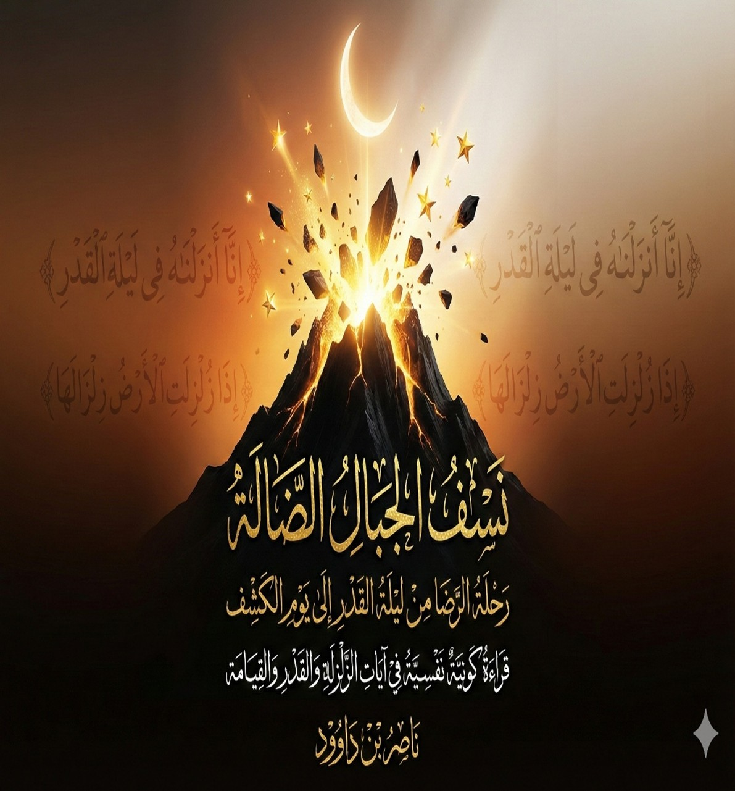

📥 روابط التحميل المباشر
📄 DOCX 📖 PDF (مباشر) 📖 PDF (خارجي) 🌐 HTML 📝 نص خام (خارجي) 📝 نص خام (مباشر) 🌐 Archive.orgوصف الكتاب
المقدمة العامة: "يمثّل القرآن الكريم – في بنائه، ولغته، وسوره القصيرة على وجه الخصوص – منظومة معرفية متكاملة تكشف بنية النفس وقوانين الوجود بقدر ما تكشف معاني الهداية والتقوى."
يأتي هذا الكتاب بوصفه مشروعاً منهجياً يربط بين ثلاثة مستويات متداخلة: النسق اللغوي القرآني، الحركة النفسية الداخلية، والقوانين الوجودية والسننية.
إن "الجبال الضالة" التي نعنيها هنا ليست صخور سيناء، بل هي تلك المسلمات الموروثة والأصنام الذهنية التي تسكن جمجمتك وتحجب عنك نور السنن. هذا الكتاب هو عملية جراحية للوعي، لنكشف كيف تحولنا من أمة 'اقرأ' إلى أمة تقدس 'الجبال البشرية'.
النقاط الرئيسية:
- القرآن منظومة معرفية متكاملة تكشف بنية النفس وقوانين الوجود
- السور القصيرة وحدات مترابطة ضمن بنية كلية تمتد من الخلق إلى الكشف
- الجبال الضالة: المسلمات الموروثة والأصنام الذهنية التي تحجب نور السنن
- التدبر عملية جماعية التكوين وتراكمية البنيان
أهداف الكتاب ومساراته
| البعد المنهجي | المحتوى | الهدف |
|---|---|---|
| النسق اللغوي القرآني | قراءة السور القصيرة من داخل بنية اللسان القرآني | فهم النظام المحكم للقرآن |
| الحركة النفسية الداخلية | مراحل بناء الذات: من التلقي إلى الكشف | إعادة ضبط الوعي البشري |
| القوانين الوجودية | الزلزلة، القارعة، التكاثر كقوانين كونية-نفسية | ربط القرآن بالواقع الوجودي |
أبرز مميزات الكتاب:
- قراءة تكاملية تربط بين اللغة القرآنية وعلم النفس
- كشف "الجبال الضالة" والأصنام الذهنية في العقل المسلم
- ربط بين ليلة القدر (بداية البناء) والزلزلة (نهاية البناء)
- تطوير منهج "التدبر الجماعي" لفهم القرآن
- تقديم رؤية جديدة لتجديد الخطاب الديني
المحاور الرئيسية:
- المنهج واللسان القرآني: فهم النظام اللغوي للقرآن
- البنية الوجودية في القرآن: السماء والأرض والجبال كرموز
- الجبال الضالة والغلو: نقد المسلمات الموروثة
- آيات الكشف: رحلة الكشف الداخلي والكوني
- سلسلة ليلة القدر: من الإنزال إلى الزلزلة
- الدائرة الوجودية: الوحدة الكاملة من الخلق إلى الكشف
فهرس المحتويات
أهم فصول الكتاب:
- الفصل 1: اللسان العربي المبين – مرآة الكون ونظام إلهي معجز
- الفصل 2: الجبال في القرآن – التراكم المعرفي بين الصالح والضال
- الفصل 3: فيزياء الخشوع.. لغة الرنين وتصدع الجبال
- الفصل 4: الغلو – جرثومة بناء الجبال الضالة
- الفصل 5: الفاتحة: شيفرة البدء وقانون الكفاءة الوجودية
- الفصل 6: ليلة الإنزال وزلزلة الوعي: التحديث لا الطقس
- الفصل 7: القارعة: صدمة الوعي وتفاضل الموازين
الرؤية النهائية
في ختام هذا البحث، يتأكد أن القرآن ليس كتاباً للطقوس فقط، بل هو منظومة معرفية متكاملة تكشف بنية النفس وقوانين الوجود. "الجبال الضالة" التي ينفها الكتاب ليست إلا المسلمات الموروثة والأصنام الذهنية التي تحجب عنا نور السنن.
بهذا الفهم، يغادر القارئ التصور السطحي للقرآن، ويدخل إلى تصور سنني يرى في الآيات قوانين وعمليات وأنظمة ضبط تعمل في الكون والنفس معاً، وتؤسس لرحلة كاملة من ليلة القدر إلى يوم الكشف.
لمن هذا الكتاب؟
- الباحثون في الدراسات القرآنية: المهتمون بالتفسير الحديث والمناهج الجديدة
- المهتمون بعلم النفس: الراغبون في فهم البعد النفسي للقرآن
- المفكرون والفلاسفة: المهتمون بفلسفة الدين والوجود
- عموم القراء: الراغبون في فهم القرآن والوجود من زاوية جديدة
- الشباب المسلم المعاصر: الباحث عن إجابات تتوافق مع العقل والعلم
- المهتمون بتجديد الخطاب الديني: الراغبون في فهم إسلام بلا مأسسة
جدول ربط تمهيدي:
- ليلة القدر: بداية البناء الداخلي وتلقي النور
- الجبال الضالة: المسلمات الموروثة والأصنام الذهنية
- الزلزلة: تفكيك البنى الداخلية وانهيار الجبال
- القارعة: صدمة الوعي وإعادة ضبط الموازين
- الكشف: التجلي النهائي ووضوح الرؤية